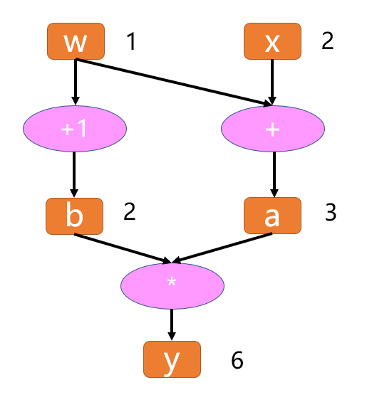
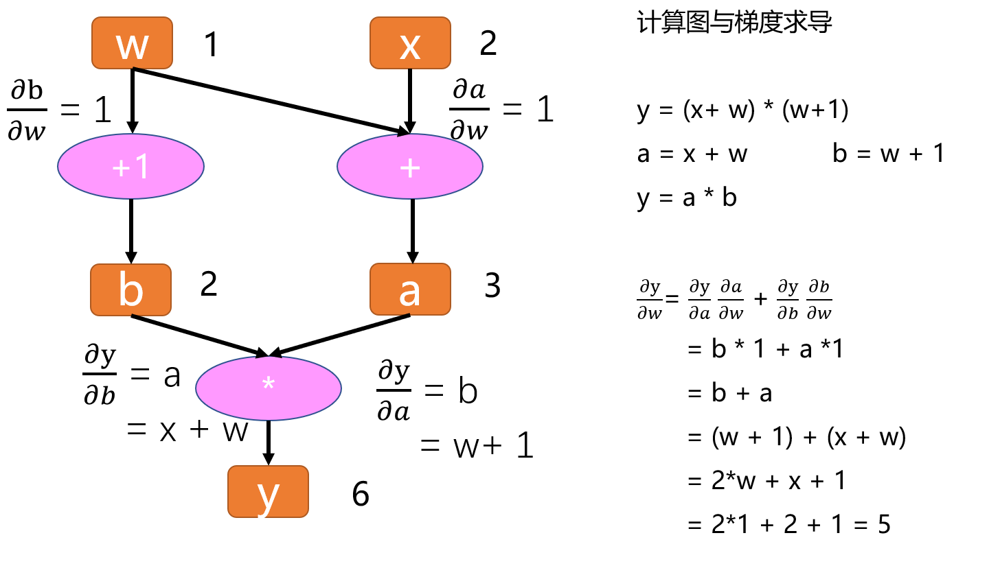
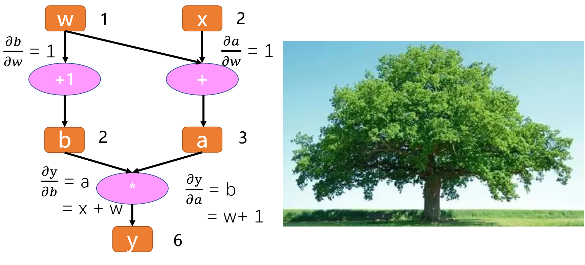
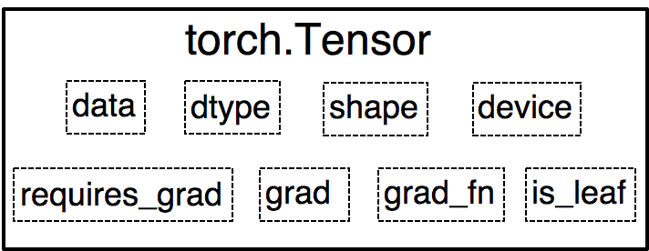

2.5 计算图
前两小节对tensor进行了详细介绍，知道了tensor是pytorch的核心数据结构，各类数据均以tensor来表示，并且tensor类中有许多属性与求导/梯度有关，下面就深入学习pytorch的自动求导模块——autograd。在autograd正式开始之前，需要了解一个重要概念——计算图（Computational Graphs）。
在学习自动求导系统之前，需要了解计算图的概念。计算图（Computational Graphs）是一种描述运算的“语言”，它由节点(Node)和边(Edge)构成。
节点表示数据，如标量，向量，矩阵，张量等；
边表示运算，如加、减、乘、除、卷积、relu等；
记录所有节点和边的信息，可以方便的完成自动求导，假设有这么一个计算：
y = (x+ w) * (w+1)
将每一步细化为：
a = x + w
b = w + 1
y = a * b
得到计算图如下：

有了计算图，我们可以尝试进行forward，带入x,w的输入数据，就得到结果y。
同样的，加入需要获取各参数的导数，也可以方便的获得。
计算图求导
假设我们要算y对w的导数，在计算图中要怎么做呢？
先来看w和y之间的关系，w会通过左边这条路走到y，也会通过右边这条路走到y，所以梯度也是一样的，会经过这两条路返传回来。
所以y对w的偏导有两条路径，可以写成以下形式， ∂y/∂w = ∂y/∂a ∂a/∂w + ∂y/∂b ∂b/∂w，然后可以通过计算图依次求出。
如图所示：

这样我们得到 y对w的导数是5，我们可以拿纸和笔推一下，是否是一样的。
我们发现，所有的偏微分计算所需要用到的数据都是基于w和x的，这里，w和x就称为叶子结点。
叶子结点是最基础的结点，其数据不是由运算生成的，因此是整个计算图的基石，是不可轻易”修改“的。而最终计算得到的y就是根节点，就像一棵树一样，叶子在上面，根在下面。
叶子结点
叶子结点是最基础的结点，其数据不是由运算生成的，因此是整个计算图的基石，是不可轻易”修改“的。而最终计算得到的y就是根节点，就像一棵树一样，叶子在上面，根在下面。

张量有一个属性是is_leaf, 就是用来指示一个张量是否为叶子结点的属性。
我们通过代码，实现以上运算，并查看该计算图的叶子结点和梯度。
import torch
w = torch.tensor([1.], requires_grad=True)
x = torch.tensor([2.], requires_grad=True)
a = torch.add(w, x)
b = torch.add(w, 1) # retain_grad()
y = torch.mul(a, b)
y.backward()
print(w.grad)
# 查看叶子结点
print("is_leaf:\n", w.is_leaf, x.is_leaf, a.is_leaf, b.is_leaf, y.is_leaf)
# 查看梯度
print("gradient:\n", w.grad, x.grad, a.grad, b.grad, y.grad)
# 查看 grad_fn
print("grad_fn:\n", w.grad_fn, x.grad_fn, a.grad_fn, b.grad_fn, y.grad_fn)
tensor([5.]) is_leaf: True True False False False gradient: tensor([5.]) tensor([2.]) None None None grad_fn: None None
我们发现y就不是叶子结点了，因为它是由结点w和结点x通过乘法运算得到的。
补充知识点1：非叶子结点在梯度反向传播结束后释放
只有叶子节点的梯度得到保留，中间变量的梯度默认不保留；在pytorch中，非叶子结点的梯度在反向传播结束之后就会被释放掉，如果需要保留的话可以对该结点设置retain_grad()
补充知识点2：grad_fn是用来记录创建张量时所用到的运算，在链式求导法则中会使用到。
思考一下y对w求导的过程，我们知道只要记录下计算图中的结点（数据）和边（运算），就可以通过链式法则轻易的求取梯度。
所以在pytorch中，自动微分的关键就是记录数据和该结点的运算。回想一下张量的结构当中其实就记录了这两个重要的东西。
在张量中，数据对应着data，结点的运算对应着grad_fn，大家现在应该明白为什么结点的运算叫grad_fn而不叫fn了吧，因为这个运算是在求梯度的时候使用的。

静态图与动态图
以上就是计算图的简单介绍。计算图根据计算图的搭建方式可以划分为静态图和动态图。
pytorch是典型的动态图，TensorFlow是静态图（TF 2.x 也支持动态图模式）。
怎么样的搭建方式是动态的？怎么样的才是静态的呢？
第一种判断：这就要看运算，是在计算图搭建之后，还是两者同步进行
先搭建计算图，再运算，这就是静态图机制。
而在运算的同时去搭建计算图，这就是动态图机制。
第二种判断：也可以通过判断运算过程中，计算图是否可变动来区分静态图与动态图。
在运算过程中，计算图可变动的，那么就是动态图，计算图不可变，是静止的，那么就是静态图。
下面来看两个示意图。


图1为pytorch的静态图示意，图2为TensorFlow的静态图示意。
动态图优点：
易懂性：程序按照编写命令的顺序进行执行
灵活性：可依据模型运算结果来决定计算图
静态图优点：
- 高效性：优化计算图，提高运算效率（但在gpu时代，这一点对于初学者而言可忽略不计）
缺点：
- 晦涩性：需要学习 seesion, placeholder等概念，debug难
以上是关于计算图概念的介绍，下一小节将详细剖析autograd机制及其常用的功能函数，预告一下，下一节内容也非常多，需要反复阅读。